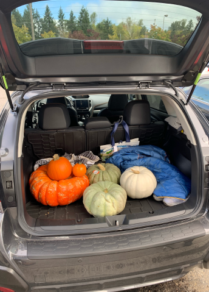

Sara just left for Indianapolis and the house hasn’t felt the same since. Just a couple days ago we went down to Arch Cape, Oregon and did the Cape Falcon Trail. We both wore our Chacos and were grateful as our feet were caked in mud by the end of it and we would have ruined any other shoe...
memories tethered to the first years of adulthood


It always feels like it finally starts to feel like summer when it is time to go back to school. I spent a lot of time outside this summer and I know how truly I will miss the sun and warm air as the leaves start to change and days get shorter and shorter. I haven’t been camping since I was in the 2nd or 3rd grade and it was such a joy. You can always sign me up for a remote, tech-free getaway. Sometimes I wish I could live 100% disconnected and off-grid. Sometime I question my desired career path.
Getting back into a routine as a new term begins makes me feel motivated and on top of it all. Remembering how to juggle classes, work, and my “social” life is usually a little wobblely in the beginning though. I’ve been avoiding homework all weekend and have some much work to do tonight, which will most likely bleed into tomorrow morning until my first class starts.

Oh what a lovely couple weeks it has been. The winter cold has been biting bad but the people (and pets) I get to spend time with every week are making me feel so fulfilled and warm. Ever since the new year began, I’ve been tagging along with Ella to her campus and have been zooming/working from there. It’s so weird to have missed being in that school environment.